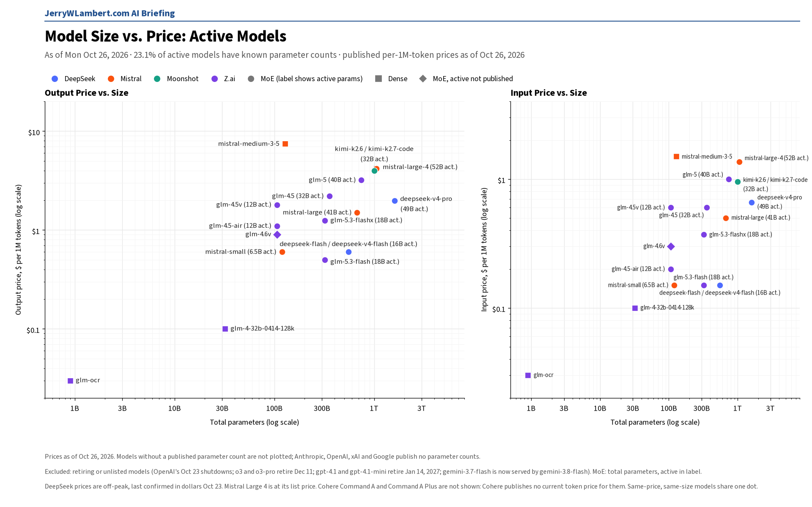
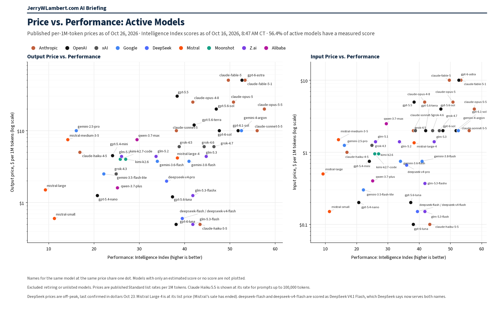

Daily Model Brief, October 26, 2026
No vendor changed a token price on any model I track since Friday. Moonshot launched Kimi K3.1 Pro at one-third less than Kimi K3 and set an end-of-December retirement for its K2 models, a two-month window that rewards buyers who can switch vendors quickly.
Download PDF SubscribeExecutive Summary
Moonshot launched Kimi K3.1 Pro on Friday afternoon, after Friday's brief went out. kimi-k3.1-pro costs $2.00 input, $0.20 cached and $10.00 output per million tokens, one-third less than Kimi K3 ($3.00 / $0.30 / $15.00), which stays on sale at an unchanged price. A faster variant, kimi-k3.1-pro-highspeed, runs about 2 to 3 times faster at $4.00 input, $0.20 cached and $20.00 output. Both have a 1M-token context window with flat pricing and no context-length tiers, and Moonshot says the full model weights will be released by November 4.
Moonshot also put its K2 models on a clock. From Saturday, October 31, newly registered accounts can no longer use K2 models (existing accounts keep access), and Moonshot plans to retire all K2 models by the end of December 2026, with no exact date yet. That is about two months' notice, which is why I keep saying buyers should not lock into one vendor.
No token price changed since Friday on any model I track at Anthropic, OpenAI, Google, xAI (Grok), Moonshot, Z.ai, MiniMax, Mistral, Alibaba, Cohere, Meta, TypeSafe, Xiaomi, Tencent, StepFun or Perplexity.
OpenAI confirmed that its April 22 group of legacy snapshots was shut down on October 23, including gpt-3.5-turbo-0125, gpt-4-turbo, gpt-4o-2024-05-13, o1, o1-pro, o3-mini, o4-mini, gpt-4.1-nano and gpt-image-1. OpenAI now marks gpt-4.1 and gpt-4.1-mini as deprecated; their January 14, 2027 shutdown date is unchanged.
Google changed a data default today, not a price. As of October 26, new paid-tier projects using the Generate Content API store requests by default (store=true); existing projects keep their current setting. Google also routes gemini-3.7-flash requests automatically to gemini-3.8-flash, which has the same price ($0.75 input, $3.75 output through December 31).
DeepSeek starts billing Search and Fetch calls made through DeepSeek Harness, Claude Code and Codex at 11:00 AM CT on Saturday, October 31. TypeSafe's jev-latest name now points to jev-1.14.0 instead of 1.13.0, at the same price.
Not confirmed today: Amazon and ByteDance prices, DeepSeek's dollar prices (its yuan prices are unchanged), IBM's model list, and Microsoft, which lists no pay-as-you-go prices. Their last confirmed prices stand. Performance scores in the chart are as of October 16.
What This Means for Customers
- If you use Kimi K3, test
kimi-k3.1-pro: input and output both cost one-third less. Budget for cache writes. Moonshot bills them separately, and a 1-hour cache write costs twice the 5-minute rate ($4.00 vs $2.00 per million tokens on K3.1 Pro). - If you run
kimi-k2.6orkimi-k2.7-code, plan the move off K2 before the end of December. Any new Moonshot account you open from October 31 will not be able to use K2. - If anything still calls OpenAI's legacy snapshots (for example
o4-mini,o3-mini,gpt-4-turboorgpt-image-1), those calls stopped working October 23. OpenAI namesgpt-5.6-sol,gpt-5.6-terra,gpt-5.6-lunaandgpt-image-2.5-sunburstorgpt-image-2.5-flareas replacements. - If you still run
gpt-4.1orgpt-4.1-mini, OpenAI now marks them deprecated. Shutdown is January 14, 2027, and the replacement isgpt-6-luna. - If your data policy limits what vendors keep, check new Gemini projects. New paid projects now store Generate Content API requests by default; set
store=falseper request or turn off logging in the project settings. - If you call
gemini-3.7-flash, your requests are already served bygemini-3.8-flashat the same price. Re-test output quality on the newer model. - If your agents search the web through DeepSeek Harness, Claude Code or Codex, DeepSeek starts billing those Search and Fetch calls at 11:00 AM CT on Saturday, October 31, at $0.75 per 1,000 successful requests each (last confirmed dollar price). Track this separately from token spend.
- Claude Haiku 4.5 is still active. Anthropic lists its retirement as not sooner than October 15, 2026, a date that has passed, and still sets no date. Keep a tested fallback ready.
New Models and Price Changes
Prices in USD per 1M tokens.
| Vendor | Model ID | Status | Input | Cached | Output |
|---|---|---|---|---|---|
| Moonshot | kimi-k3.1-pro | New (launched Fri Oct 23, afternoon). 1M context. Cache writes: $2.00 (5-minute) or $4.00 (1-hour). | $2.00 | $0.20 | $10.00 |
| Moonshot | kimi-k3.1-pro-highspeed | New. About 2 to 3 times faster than K3.1 Pro. Cache writes: $4.00 (5-minute) or $8.00 (1-hour). | $4.00 | $0.20 | $20.00 |
| Moonshot | kimi-k3 | Unchanged. Confirmed again today. | $3.00 | $0.30 | $15.00 |
| Moonshot | kimi-k2.7-code | Unchanged. Closed to new accounts from Oct 31; retiring by end of December. | $0.95 | $0.19 | $4.00 |
| Moonshot | kimi-k2.6 | Unchanged. Closed to new accounts from Oct 31; retiring by end of December. | $0.95 | $0.16 | $4.00 |
| gemini-3.8-flash (also serves gemini-3.7-flash) | Unchanged through Dec 31; $1.50 / $0.15 / $7.50 from Jan 1, 2027. | $0.75 | $0.075 | $3.75 | |
| Alibaba | qwen3.8-27b | Unchanged (International). | $0.50 | — | $3.00 |
| Alibaba | qwen3.8-max | Unchanged. | $2.00 | — | $6.00 |
| MiniMax | MiniMax-M3.1-Flash | Unchanged. | $0.15 | $0.015 | $0.60 |
| Mistral | mistral-large-4 | Unchanged at list price. | $1.36 | $0.14 | $4.18 |
| Meta | muse-spark-1.3 | Unchanged (Standard mode). | $1.25 | $0.15 | $4.25 |
| Cohere | Command R+ 08-2024 (legacy) | Unchanged. No cached-token price published. | $2.50 | Not listed | $10.00 |
| DeepSeek | deepseek-v4-pro | Off-peak price, last confirmed. Yuan prices unchanged today; dollar prices not confirmed today. | $0.66 | $0.022 | $1.98 |
| DeepSeek | Search API / Fetch API | Billing for calls through DeepSeek Harness, Claude Code and Codex starts Sat Oct 31, 11:00 AM CT. $0.75 per 1,000 successful requests each (last confirmed dollar price). | Per request | — | Per request |
| Tencent | Hy3 | Unchanged. | $0.132 | $0.033 | $0.528 |
| TypeSafe | jev-1.14.0 | Unchanged. jev-latest now points here (was jev-1.13.0, same price). Output free. | $0.042 | — | $0 |
| IBM | granite-4-h-small | Last confirmed price. Not confirmed today. | $0.0636 | Not listed | $0.265 |
- No tracked token price changed since Friday's brief. The two Kimi K3.1 Pro models are the only new public prices.
- Kimi K3.1 Pro is priced one-third below Kimi K3 on input, cached input and output.
- Z.ai still marks cached input storage as limited-time free, and Xiaomi still marks cache writes as limited-time free; neither gives an end date.
- Prices from Amazon and ByteDance could not be confirmed today, IBM's model list could not be confirmed, and Microsoft lists no pay-as-you-go prices. Their last confirmed prices stand, unverified today.
Deprecations
| Vendor | Model ID | Shutdown (CT) | Replacement | Note |
|---|---|---|---|---|
| OpenAI | gpt-3.5-turbo-0125, gpt-4-0613, gpt-4-1106-preview, gpt-4-turbo, gpt-4o-2024-05-13, o1, o1-pro, o3-mini, o4-mini, gpt-4.1-nano, gpt-image-1 (and fine-tuned versions) | Fri Oct 23, 2026 (passed) | gpt-5.6-sol gpt-5.6-terra gpt-5.6-luna gpt-image-2.5-sunburst or gpt-image-2.5-flare | OpenAI now confirms access was shut down Oct 23. |
| deep-research-pro-preview-12-2025 | Fri Oct 23, 2026 (passed) | deep-research-preview-04-2026 | Shutdown date passed Friday. | |
| Perplexity | openai/gpt-5.4, gpt-5.4-mini, gpt-5.4-nano, gpt-5.2, gpt-5.1, gpt-5, gpt-5-mini (Agent and Orchestrator API) | Fri Oct 23, 2026, 7:00 PM CT (passed) | Not named | Retired Friday evening. |
| gemini-3.7-flash | No shutdown | gemini-3.8-flash | Google routes API requests to gemini-3.8-flash automatically, at the same price. | |
| Moonshot | kimi-k2.6 kimi-k2.7-code (all K2 models) | By end of December 2026 (no exact date) | kimi-k3.1-pro | New. Closed to newly registered accounts from Sat Oct 31; existing accounts keep access until retirement. |
| gemini-3.1-flash-tts-preview gemini-2.5-flash-preview-tts gemini-2.5-pro-preview-tts | Tue Nov 17, 2026 (time not stated) | gemini-3.8-flash-tts or gemini-3.8-flash-lite-tts | Unchanged. | |
| gemini-3.1-flash-live-preview gemini-2.5-flash-native-audio-preview-12-2025 | Tue Nov 17, 2026 (time not stated) | gemini-3.8-live | Unchanged. | |
| Microsoft (Azure) | Llama-4-Maverick-17B-128E-Instruct-FP8 | Thu Nov 19, 2026 (time not stated) | None named | Unchanged. |
| Anthropic | claude-sonnet-4-5-20250929 | Mon Nov 30, 2026 (time not stated) | claude-sonnet-5-5 | Unchanged. |
| Microsoft (Azure) | Ministral-3B mistral-medium-2505 | Wed Dec 9, 2026 (time not stated) | ministral-ministral-4b-instruct mistral-medium-3-5 | Unchanged. Applies to Azure deployments, not Mistral's own API. |
| OpenAI | gpt-4.1 gpt-4.1-mini gpt-4o-2024-08-06 gpt-4o-2024-11-20 gpt-4o-mini-2024-07-18 | Wed Jan 13, 2027, 6:00 PM CT | gpt-6-luna | Unchanged date. gpt-4.1 and gpt-4.1-mini now marked deprecated. OpenAI lists Jan 14, 2027 with no time; 6:00 PM CT Jan 13 is 00:00 UTC Jan 14. |
| Microsoft (Azure) | Llama-3.3-70B-Instruct | Sun Jan 31, 2027 (time not stated) | None named | Unchanged. |
| Microsoft (Azure) | cohere-command-a mistral-small-2503 | Mon Feb 15, 2027 (time not stated) | Cohere-command-a-plus-05-2026 mistralai-mistral-small-4-119b-2603 | Unchanged. |
| Microsoft (Azure) | Kimi-K2.6 Kimi-K2.7-Code | Fri Apr 16, 2027 (time not stated) | None named | Unchanged. Azure's date is later than Moonshot's own K2 retirement. |
| Microsoft (Azure) | embed-v-4-0 | Tue Jun 1, 2027 (time not stated) | Cohere-embed-v5-fast, Cohere-embed-v5-pro | Unchanged. |
| Microsoft (Azure) | Cohere-rerank-v4.0-fast Cohere-rerank-v4.0-pro | Mon Sep 13, 2027 (time not stated) | Cohere-rerank-v5-fast Cohere-rerank-v5-pro | Unchanged. |
| Microsoft (Azure) | gpt-oss-120b | Wed Sep 15, 2027 (time not stated) | None named | Unchanged. |
| Microsoft (Azure) | DeepSeek-V3.2 DeepSeek-V3.2-Speciale | Mon Nov 1, 2027 (time not stated) | DeepSeek-V4.1-Flash DeepSeek-V4-Pro | Unchanged. |
| Anthropic | claude-haiku-4-5-20251001 | Not sooner than Thu Oct 15, 2026; no date set | None named | Watch item. Still active with no date set. |
| Cohere | command-r command-r-plus | Deprecated Sep 15, 2025; no shutdown date set | command-r-08-2024 command-r-plus-08-2024 command-a-03-2025 | Closed to new customers; existing users keep access until retirement. |
- Moonshot's K2 notice is the only new retirement since Friday. Moonshot gives a month, not a day, so treat December 1 as the safe planning date.
- OpenAI's earlier notices are unchanged: gpt-5.3-codex, gpt-5.1 and gpt-5.4-nano shut down April 1, 2027, and the /v1/audio/translations endpoint shuts down February 26, 2027.
- No other shutdown dates moved since Friday at Anthropic, Google or OpenAI.
Price Tracker
Shares of the full tracked population.
- 1,934 models tracked.
- Audited pricing, confirmed against the vendor's own published prices: 13.1% of the full tracked population.
- Unaudited pricing: 5.3%.
- The rest have no public per-token price (47.6%: self-hosted open weights, retired or unpublished) or are duplicate listings of another tracked model (34.0%).
Agent Platforms
Hosted AI agents that come with their own persistent cloud computer.
- Grok Bot (xAI): its own persistent cloud computer; access is included in paid plans and draws from a weekly usage pool. Release v0.75.5 (October 23) adds a Vault for saved logins, cards and contact details, email forwarding from the bot's inbox, fewer approval prompts, and scheduled routines of up to 300 runs an hour. No plan price change.
- dots (OpenAI): not verified today. Last confirmed: a dot "has its own cloud computer," and the first comes with Pro and Business Premium at no extra cost.
- Muse (Meta): "You and your Muse share your own dedicated computer in the cloud." Runs on Muse Spark 1.3, whose API price is unchanged at $1.25 input, $0.15 cached and $4.25 output per million tokens. Billing is unverified today.
- Manus: the Cloud Computer add-on is a persistent server billed separately at $30 a month (2 vCPUs, 4 GB RAM, 70 GB storage) or $50 a month (2 vCPUs, 8 GB RAM, 120 GB storage). No change.
- Genspark Claw: runs "on a dedicated cloud computer provisioned just for you," which requires a Lite, Standard or Powerful Cloud Computer subscription; Genspark publishes no dollar amounts. No price change.
Model Size vs. Price

Among active models with a known parameter count (23.1% of active models), price rises with total size (rank correlation 0.62 on output price). Anthropic, OpenAI, xAI and Google publish no parameter counts, so their models are not plotted. No plotted price changed since Friday. Prices as of October 26, 2026.
Price vs. Performance

Among active models with a performance score (56.4% of active models), price rises with performance only loosely (rank correlation 0.49 on output price). Claude Haiku 5.5 leads at $0.50 or less (43.4). At the frontier, Gemini 4 Argon scores 52.6 and GPT-6.1 Sol 51.8, each at $10 output, while xAI's Grok 4.7 scores 46.5 at $6. Scores as of October 16, 2026; prices as of October 26, 2026.
All times Central. Vendor prices, dates and model IDs are as of 8:45 AM CT on October 26, 2026. Chart prices are as of October 26, 2026. Performance scores are as of October 16, 2026. Percentages are shares of the full tracked population. Items that could not be confirmed are marked unverified.